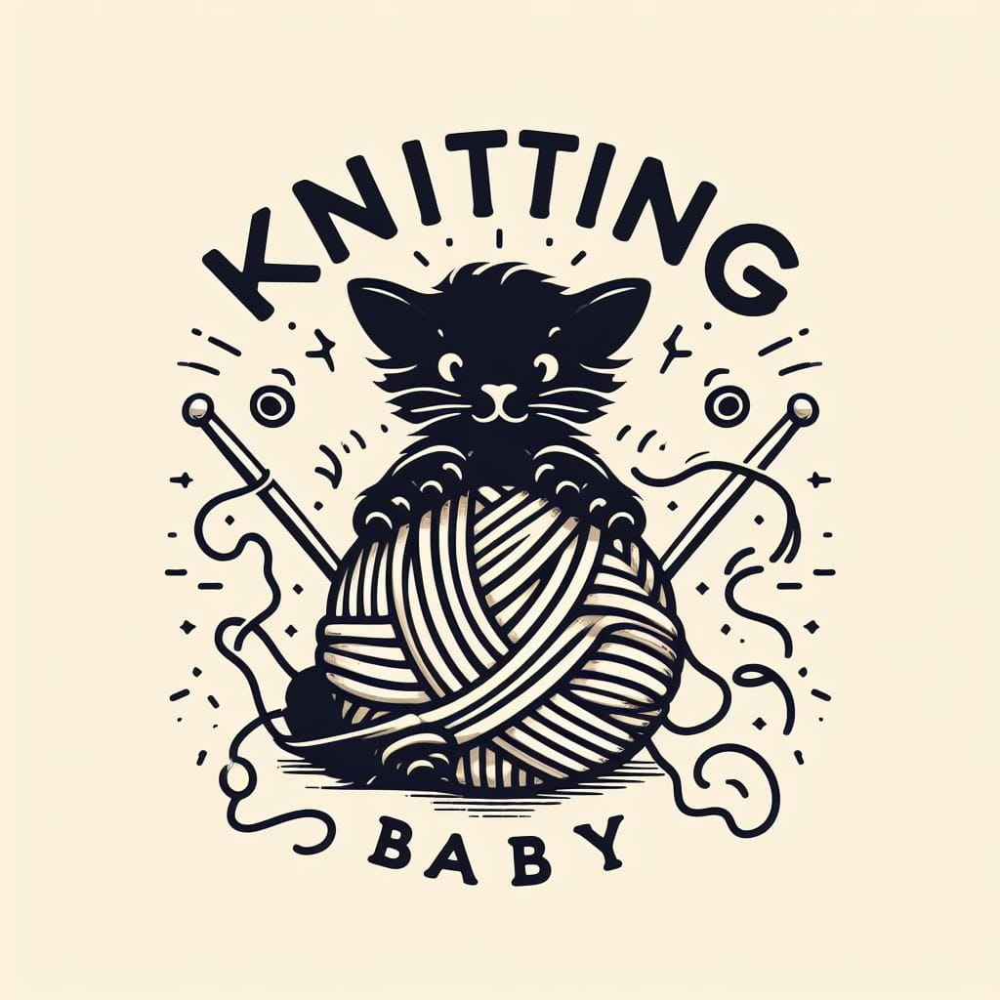
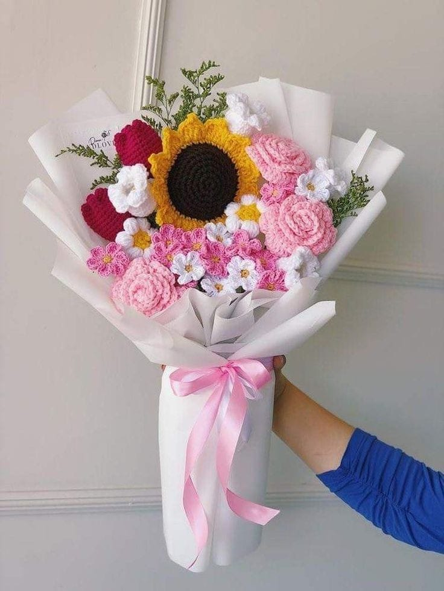

Bienvenidos a la comunidad crochetera, somos una microempresa que va comenzando a cumplir su meta, dicha meta es lograr brindarles un poco de
cariño y detallitos que están echos con mucho esfuerzo y dedicación de parte de una servidora. Pero antes de todo quiero que sepan un poco de nuestra histioria:)
El crear cosas manualmente y mediante el trabajo de concentración me a dado la capacidad de valorar cada esfuerzo que hago día a día, pues todo esto comienza como una distracción o como un simple hobbie a los 11 años de edad, por varios factores que pasaron en mi vida. Hasta que un día tomé la desición de compartir u poco de mi talento a las personas, todo esto mediante regalos a mis seres queridos. Y es así como comienza la idea de vender las cosas que amó hacer, pues de esta forma todos tedrían muestras de cariño especiales.

Espero lograr llenar de amor y cariño a todas esas personas que aman. Que disfruten de estos proyectos.
REDES SOCIALES:
Flores
